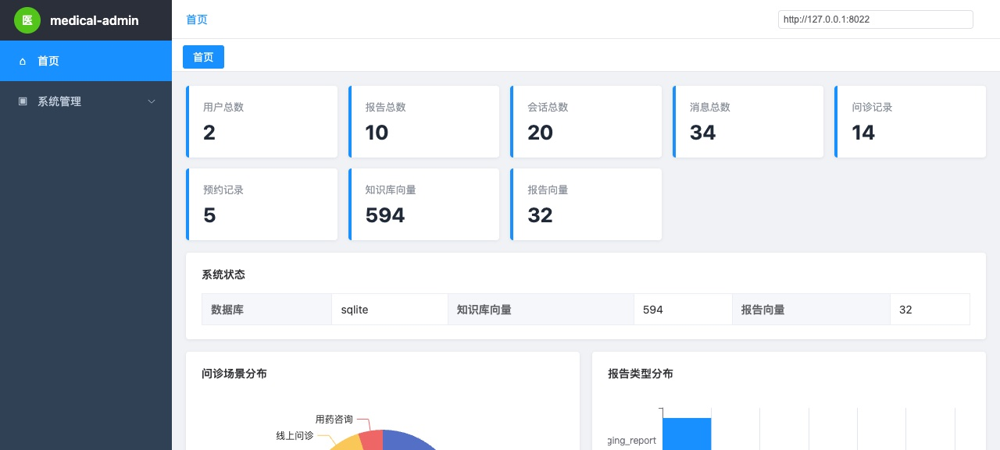

2026 · AI 应用 / 医疗
医路通 Agent Pro
在医疗场景里，一个说得太顺的答案是危险的。所以我做的不是「回答得像医生」，而是「每条结论都能指出它从哪来」。
患者描述症状之后，系统给出风险分层、建议科室和就诊紧迫度，再进入线上问诊、报告解读或预约挂号。每一步旁边都能展开：它查了什么、谁在推理、引用了哪段资料。
这是做什么的
互联网医院场景的多智能体问诊系统。前台六个模块：智能分诊台、线上问诊、问诊记录、报告查询、预约挂号、系统设置；另有一套独立的管理后台。
实际长什么样

为什么这样设计
-
01
记忆不是越多越好，要按意图开关
系统把问题分成七种意图，每种意图单独决定「读不读长期记忆」和「证据优先级给谁」。分诊时强制关掉记忆——此刻的症状不该被半年前的体检报告稀释；而「和上次比是不是降了」这类问题，本轮报告才是主证据。这套开关写在策略表里，不是靠提示词求模型自觉。
-
02
合规不放在提示词里，放在输出之后
「不要说确诊」写在系统提示词里，只是降低了概率，没有形成约束。真正起作用的是跑在模型输出之后的一层确定性代码：命中禁止表述就改写、必要处补免责声明。它不管你前面怎么推理，只看最后那句话能不能出门。
-
03
结论必须能指回去
分诊、用药、报告解读各自独立编排，避免一个 Agent 同时承担互相冲突的目标；每条结论旁边挂检索证据和推理链路，界面上可以逐条点开。做得不完美，但方向是「可核查」而不是「听起来专业」。
边界与还没做完的
这是一个技术演示系统，不是可以接诊的医疗服务。页面里的对话、报告和指标都是演示数据，不能用于任何真实的健康决策。
分诊给出的风险分层是提示，不是诊断；报告解析里的置信度是模型自评，不代表医学意义上的准确性。
这个项目起步于一份现成的产品模板，我做的是工程化落地：检索、意图路由、合规后处理、证据链和部署都是后来补的。这点写清楚比含糊过去更合适。
后处理能拦住已知的措辞模式，拦不住绕开措辞的错误结论。真正的安全性要靠评测集和人工复核，这部分我还没有做完。